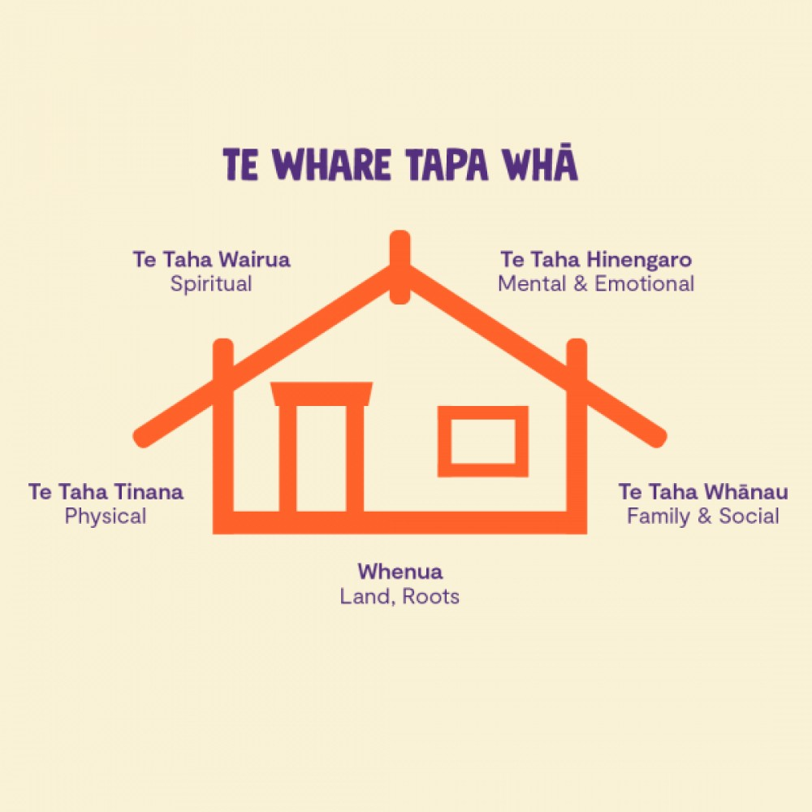

Te Whare Tapa Whā
Monday, 16 September 2024
The leading Māori health advocate, Sir Mason Durie, developed Te Whare Tapa Whā in the early 1980s. It describes hauora (health and wellbeing) as a wharenui (meeting house).
The four pillars of the wharenui are a metaphor for different aspects of Hauora: representing taha wairua (spiritual wellbeing), taha hinengaro (mental and emotional wellbeing), taha tinana (physical wellbeing), and taha whānau (family and social wellbeing). Our connection with the whenua (land) is the wharenui foundation.
Te Whare Tapa Whā reminds us that we thrive when all these pillars of hauora are in balance. And conversely, when they are unbalanced, we suffer.
Te Whare Tapa Whā

Source: Mental Health Foundation
Te Whare Tapa Whā has great depth and has been developed further over the years (and has been drawn on for other holistic Māori models of care). The table below is a simplified representation of my wellbeing plan sketched using Te Whare Tapa Whā.
Summary wellbeing plan
| Te Whare Tapa Whā | Description | My own wellbeing |
|---|---|---|
| Whenua (Connection to the land and environment) | Whenua is the foundation. The hauora of the land and environment are strongly connected to your hauora. | Beach walks, bike rides, and bush trails. |
| Taha Wairua (Spiritual wellbeing) | Taha Wairua is about the things that give you meaning. Your spiritual essence. | Music, meditation and mindfulness, and walking outdoors. |
| Taha Hinengaro (Mental wellbeing) | Taha Hinengaro is your mental wellbeing – how you feel, communicate, and think. | Learning (software development, Te Reo, and reading), reflection, and sleep. |
| Taha Tinana (Physical wellbeing) | Taha tinana is your physical wellbeing. | Healthy diet and exercise e.g., 5+ a day, swimming, walking, gym, and yoga. |
| Taha Whānau (Family wellbeing) | Taha Whānau is about the people who matter to you – the family, friends, and colleagues you spend time with. | Dinners, discussion, outdoors, movies, evenets, and other mayhem. |
Key references
Mental Health Fuondation Te Whare Tapa Whā.
Youth Service (MSD) Wellbeing, your wellbeing matters.
Healthify (He Puna Waiora) Te Whare Tapa Whā and wellbeing.